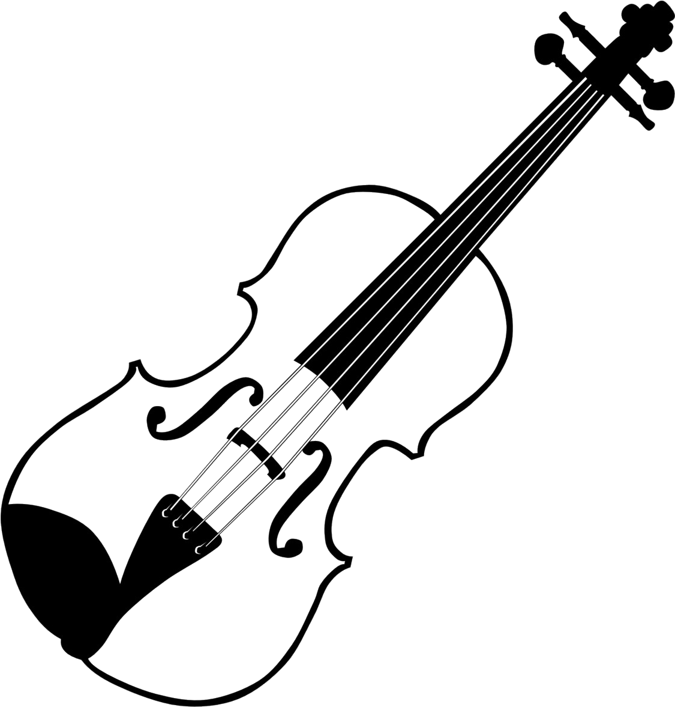

ASTRUM
Where music meets science


THE VIOLINIST
Playing the violin since the age of 3, I have always been embalmed in music, and not a day had gone by where I thoughts have not in the slightest strayed into the realm of music. After joining the College of Music, Mahidol University in early 2012, my musical vocabulary has since then, been expanding to cover a wide variety of genres.
As a player, I have performed regularly as both a violinist and violist in orchestras, chamber groups, and Jazz combos. In 2019 alone, I have performed in Bach in Bali Festival, Bali; 150 yeares Thai-Austrian Relationship concert, Vienna, Austria; Thai-Hungarian Relationship Concert, Hungary; Clazz International Music Festival, Arcidosso, Italy. My styles include Classical, Jazz, Celtic, Folk and more.
Other than being a regular player, I am also an arranger and composer. My interest spans over various genres of music: classical, jazz, traditional, electronic, film music, etc. In 2013, a year after I was admitted to the College of Music Mahidol University as a violin major, I began music composition lessons with Dr. James Ogburn, with whom I studied for a year and a half. Afterwards, my interest in performance and composition persisted and I am currently pursuing a bachelor's degree at Princess Galyani Vadhana Institute of Music. Sought after as a composer and arranger, I have collaborated throughout my many years of composing and arranging with artists from the USA, Russia, Israel, Thailand, and Germany. My latest album “Brunette” can be found on most major online stores, such as iTunes, Spotify, Google Music, and Deezer.